La Quinta Compañía de Bomberos de Talcahuano comienza a escribir su historia hace ya 110 años. Sus primeras líneas escritas a fuego, serían la chispa de ignición de una de las más célebres y reconocidas compañías de bomberos del sur de Chile.
En el año 1908, un grupo de personas nativas de Alemania y de descendencia alemana se habían asentado hace ya algún tiempo en el puerto de Talcahuano. Éstos inmigrantes se dedicaban especialmente a nutrir el creciente comercio marítimo que abundaba en la zona, siendo personas trabajadoras, inteligentes y reconocidas.
La génesis de un legado
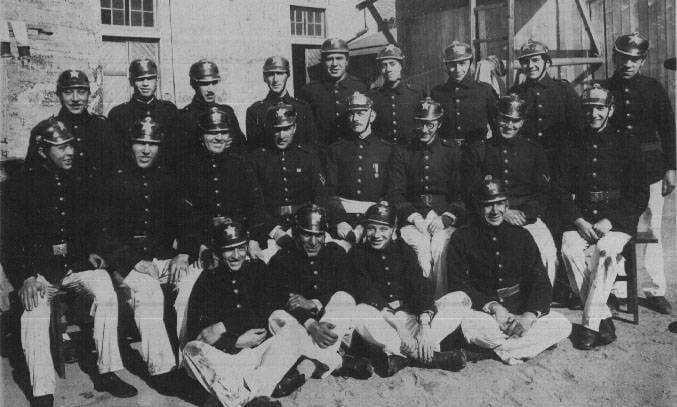
De esta manera, transcurría plácidamente el verano de 1908. El mes de enero se había iniciado con el afán de todos por concurrir a las playas del puerto en busca de la refrescante brisa marina. Nada hacía presagiar un siniestro. Sin embargo, una noche, el lúgubre tañido de las campanas de incendio llevó la inquietud a muchos hogares. Grandes llamas teñían de rojo la noche estival. Todos corrían hacia el centro de la ciudad. El fuego destruía importantes edificios situados en las calles Bulnes y Aníbal Pinto. Dada la rapidez con que se extendió el incendio, se hizo imposible salvar el menaje de algunas casas afectadas por el siniestro.Entre las familias damnificadas se encontraban algunas construidas por alemanes. Las dificultades originadas por la carencia de elementos necesarios para salvamento, demostró que las cuatro compañías con que contaba en ese momento el Cuerpo de Bomberos de Talcahuano eran insuficientes en estos casos; era, por lo tanto, de absoluta necesidad organizar una nueva compañía “Guarda de Propiedad”.
Al día siguiente, los señores Carlos Gantz – uno de los damnificados por el incendio de la noche anterior – y Enrique Trouchon cambiaron ideas sobre el particular, y en los días siguientes iniciaron una activa campaña entre los miembros de la colonia alemana, mucho de los cuales habían concurrido al siniestro, para convocar a una reunión con la finalidad de dar forma a una nueva institución bomberil. El 29 de Enero de 1908 reúnanse en los salones del antiguo club musical un grupo de alemanes y descendientes de alemanes. Después de oídas algunas opiniones, se acordó desechar la primera idea de fundar una compañía “Guarda de Propiedad”, aceptándose, en cambio, echar las bases de una compañía de agua. Aprobada el acta de fundación de la Quinta Compañía de Bomberos, su primer directorio quedó conformado así:
| Primera Oficialidad de Compañía – 1908 |
| Director: Sr. Ernesto Werkmeister |
| Capitán: Sr. Eugenio Delpín |
| Secretario – Tesorero: Sr. Ricardo Setz |
| Primer Oficial de Tierra: Sr. Hermógenes Pérez de Arce |
| Primer Oficial de Mar: Sr. Eduardo Schuyler |
| Segundo Oficial de Tierra: Sr. Enrique Trouchon |
| Maquinistas: Sr. R. Schulze – H. Schumacher |
Fuera de los nombrados asistieron los siguientes señores: Herman Franz, Carlos Gantz, Herman Setz, Egidio Delpín y F. Kuhn. Una vez organizada la compañía, se hicieron los trámites correspondientes para comunicar los acuerdos del Honorable Directorio General y solicitar su reconocimiento e incorporación al Cuerpo de Bomberos de Talcahuano, trámite que quedó cumplido el 6 de Mayo de 1908, siendo Superintendente del Cuerpo el señor Jorge Garretón. Aunque se había dado un gran paso quedaba todavía algo muy importante que solucionar: adquirir el material para trabajo y la compra de uniformes.
Don Eugenio Delpín da a concer a los asistentes que los señores Mauricio Gleisner y Compañía han tenido la amabilidad de poner a disposición de la nueva Compañía su remolcador “Mauricio”, que está dotado con una poderosa bomba. El remolcador está actualmente en reparaciones, quedando listo para el servicio a fines del próximo mes de febrero (1908), fecha desde la cual podrá ser ocupado por la compañía.
Por lo demás, la referida firma ha puesto también a disposición su bodega para guardar los materiales, como mangueras, etc; con el fin de que queden lo más a mano posible.
Cabe señalar que nuestra compañía fué bautizada por sus fundadores en sus inicios como «Chile», en honor y agradecimiento a la nación que los cobijó. Con la adquisición en 1912 de su primera unidad equipada con bomba a vapor, que los voluntarios bautizaron como la «Bomba Chile», su original nombre con el paso de los años terminaría traspasándose al nombre de nuestra unidad.
El Dresden, la historia mundial ligada a la Quinta
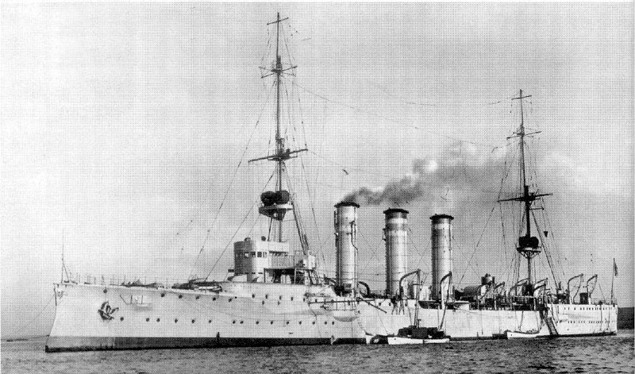
Así mismo, es importante rememorar un trozo de nuestra historia mundial y ligarla al de nuestra Quinta Compañía. Para el año 1914, la “Ostasiengeschwader” o “Escuadra del Este Asiático Alemán” estaba al mando del aristocrático vicealmirante Maximilian Graff Vön Spee, y estaba compuesta por los cruceros acorazados “Scharnhorst” y “Gneisenau”; los cruceros ligeros “Emden”, “Leipzig” y “Nürnberg”, más unidades menores – cañoneros y torpederos -. Estos buques de combate podían contar con el eficaz apoyo de toda una red de mercantes de su nacionalidad, que en caso de guerra actuarían como auxiliares. Paralelamente, en aquellos años iniciales del siglo XX, también había una importante presencia naval europea en América Latina. En este caso, los fines no eran de conquista como en otras latitudes, sinó, más matizadamente, de influencia y de resguardo de los intereses de sus súbditos en conflictos como la Revolución Mexicana. En aguas de ese país, se encontraba el crucero ligero “Dresden”, al que las circunstancias lo llevaron a unirse a la escuadra de Vön Spee. El estallido de la I Guerra Mundial, a principios de agosto de 1914, trajo dilemas para ambos bandos.Para Vön Spee y sus cruceros, eran varias las alternativas, aunque difíciles; una de ellas era dispersarse y atacar aisladamente buques de países enemigos, y la otra, intentar llegar, manteniendo la escuadra unida, hasta las costas alemanas, cruzando océanos donde sus enemigos tenían una superioridad neta. Luego de la batalla naval de Coronel, frente al golfo de Arauco, el 1 de Noviembre de 1914, y al cabo de un mes, en la mañana del día 8 de Diciembre, los buques de Vön Spee se aproximaban a Port Stanley, capital malvinense y, alertados, los buques británicos elevaron anclas de su bahía e iniciaron su persecución. Pasado el mediodía comenzó una batalla que se prolongó durante toda la tarde, y que culminó con el hundimiento de los cruceros “Scharnhorst”, “Gneisenau”, “Leipzig” y “Nürnberg”; poquísimos de sus náufragos pudieron ser rescatados con vida de las heladas aguas. El mismo Vön Spee y sus dos hijos integraron la larga lista de muertes.
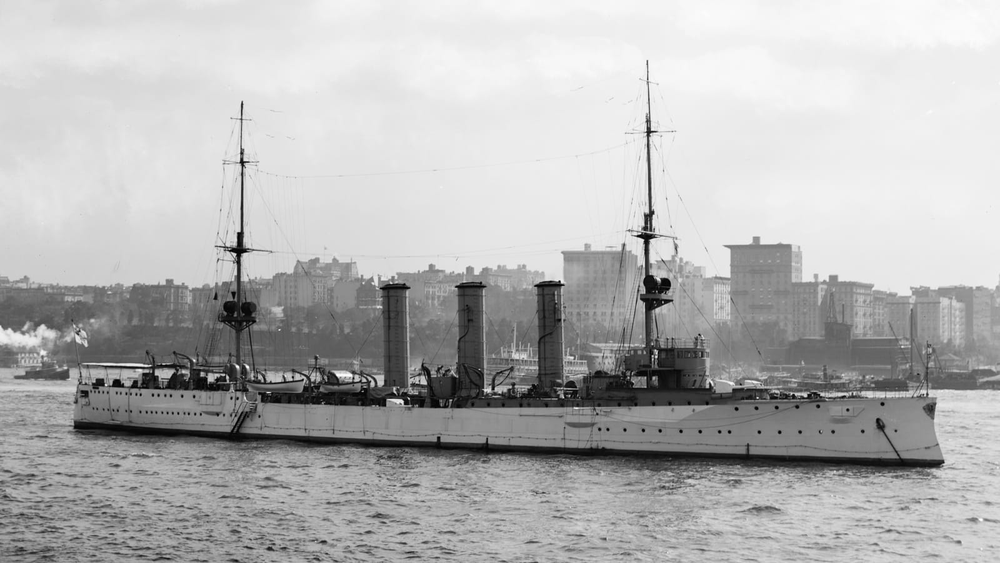
Sólo escapó el crucero ligero “Dresden”, que se refugió en los canales australes Chilenos y luego se dirigió hacia el Archipiélago de Juan Fernández donde, acorralado por una fuerza superior, el 14 de Marzo de 1915, fué hundido por su tripulación, cumpliendo órdenes de su comandante, Fritz Lüdecke. Sus hombres se apresuraron a nadar hasta tierra para así evitar ser capturados, amparándose en la neutralidad Chilena. Nuestro país los trasladó hasta la Isla Quiriquina, donde permanecieron internados hasta el fin de la guerra.Los marineros, al permanecer internados en nuestras costas, la comunidad residente muy preocupada por el tema, brinda una cordial bienvenida. Es así como se radican nuevas familias, quienes en forma de agradecimiento por la ayuda de la comunidad de Talcahuano, y en especial de los residentes alemanes que formaban parte de la naciente Quinta Compañía comienzan a entregar importantes ayudas. Estos, con esfuerzo y con donaciones recolectadas se unen y logran costear la compra de dos ruedas, pero faltaba el resto para construir con esas dos ruedas un pequeño carro. En un derroche de entusiasmo, los propios voluntarios de la Quinta y marineros del “Dresden” construyeron la carrocería de un gallo tirado a mano, trabajo en el cual fueron dirigidos por el Voluntario H. Schumacher, construyendo la primera unidad terrestre para trabajo de incendios con la que contó nuestra compañía.
Las bases para el futuro
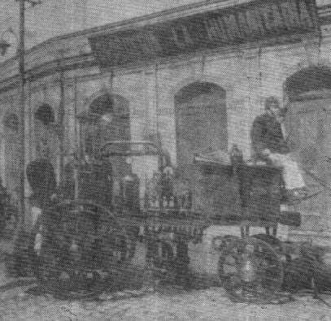
Es así como al cabo de su primer año, se hicieron inhumanos esfuerzos por mantener y sentar las bases de una institución sólida que permaneciera en el tiempo y cuyo nombre fuese respetado y reconocido.De esta manera comenzó el aprendizaje y observación de sus otras cuatro compañías hermanas, para idear el modelo a seguir y habituarse a la apasionante labor bomberil. Hasta aquel momento, los voluntarios de la Quinta prestaban sus servicios agregados a otras compañías. Pero casi al año de su fundación, el 5 de Enero de 1909, realizaron su primer ejercicio público, con lo cual quedó demostrado el grado de preparación bomberil alcanzado hasta esa fecha. Ya las bases habían alcanzado solidez, se podía continuar la marcha hacia el futuro, la semilla sembrada comenzaba a dar sus frutos.
De esta manera, hasta los tiempos más actuales, nuestra compañía se preocupa de brindar un homenaje a aquellos que ya no nos acompañan y que alguna vez fueron quienes prestaron una mano de importante ayuda para esta Quinta. Aquellos que dicen “firme” en el recuerdo de cada lista y están dispuestos siempre a cumplir su deber, como es el caso de los dos marineros del buque S.M.S. “Dresden”, cuyos restos reposan hasta el día de hoy en el Cementerio Nº1 de Talcahuano, Hier Richard Cáesar, y Hier Adolf Friederich Kück, y de muchos otros más…
Años más tarde, cuando los Quintinos se dedicaban llenos de alegría a sus actividades, su Director, señor Enrique Werkmeister, fallece de forma repentina, víctima de un accidente de tránsito, con lo cual la compañía quedo privada, inesperadamente, de su entusiasta e inteligente cooperación. Los funerales del señor Werkmeister se llevaron a cabo en la ciudad de Valdivia, lugar donde fueron conducidos sus restos, escoltados por delegaciones de todas las compañías del Cuerpo de Bomberos de Talcahuano. Nuestra compañía se hizo presente con todos sus voluntarios.
Al sepelio concurrió, además, todo el Cuerpo de Bomberos de Valdivia.
Desde sus funerales los directivos no tuvieron otra meta que la firme decisión de incrementar el material. Cuando los fondos reunidos alcanzaron a una apreciable cantidad se pensó en las posibilidades de adquirir una bomba a vapor. Por otra parte, el Directorio General acordó conceder a la compañía la suma de $ 4.000 pesos, cantidad que debía destinarse exclusivamente a la adquisición de la referida bomba.
El material y el servicio
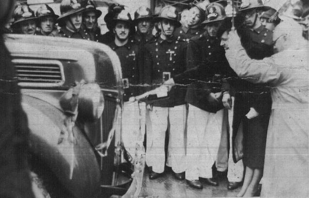
Al tener los medios económicos para hacer la adquisición se resolvió encargar directamente a Alemania una poderosa bomba a vapor, con capacidad mínima de 1500 litros por minuto. Al mismo tiempo se ordenó a una importante casa comercial de ese mismo país la confección de un estandarte. Llegadas a nuestro puerto estas adquisiciones se efectuó el bautizo de ellas en una sesión solemne llevada a cabo en la Plaza de Armas. El nombre de “Bomba Chile” que recibió la primera bomba (1912) que tuvo la compañía, se colocó como homenaje a nuestra patria, nombre que se ha perpetuado en denominación de la compañía. El estandarte a sido meticulosamente cuidado hasta la fecha y es el único que ha tenido la compañía en su dilatada existencia.El 14 de septiembre de 1930 llega a la compañía la primera auto-bomba, importada desde Alemania. El Directorio General, tras grandes esfuerzos, adquirió dos unidades “Flader”, correspondiendo una a la Quinta Compañía, y otra a la Cuarta Compañía, con lo cual se inicia una era de franco progreso en lo que se refiere a material de incendio. Esta fue bautizada bajo el nombre de “Eugenio Delpin”, fundador de la compañía. El afán permanente de renovación inspirado por el Superintendente, señor Luis de la Cerda S., y el Comandante, Señor Juan Sosa S., luego de analizar las condiciones técnicas del material ofrecido por distintas firmas comerciales, logró adquirir en los Estados Unidos dos maquinas “Ford” equipadas con bombas “Champion”.
Estas fueron entregadas el 12 de abril de 1942 en una solemne ceremonia a la Cuarta y Quinta Compañías de Talcahuano. Con este fin de perpetuar la tradición, a esta nueva bomba llevó por nombre: “Eugenio Delpin” la misma denominación que tenía la anterior. En estos días, esta bomba está en proceso de restauración, para pasar a ser un recuerdo vivo del bomberismo de antaño, en nuestra ciudad.
«La Quinta la hacen las personas»
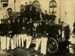
Nuestra compañía, en su larga trayectoria bomberil, ha tenido voluntarios que se han destacado en cargos de importancia en la dirección del Directorio General, como los señores Eduardo Schuyler Z. (Superintendente y Comandante); Eduardo Delpin L. (Superintendente y comandante); Luis de la Cerda S. ( Superintendente por un periodo de 46 años); Juan Guillermo Sosa Severino ( Comandante por un periodo de 31 años); Eduardo Saldes Pérez de Arce (Tercer Comandante), Fernando Etcheverry Urra ( Superintendente y Director de la Junta Nacional de Bomberos) y muchos otros, de los cuales viven en el recuerdo de los Quintinos de manera diaria.Durante el transcurso de los años la Quinta Compañía, ha constado con diversos carros, entre ellos: Renault Berliet con una capacidad de 2500 litros de agua. Este carro se integró a la familia Quintina el año 1974. Posteriormente se integró a las filas de la Compañía un carro Magirus Deutz, modelo del año 1962, la que contaba con una escala mecánica de 38 Metros, sirviendo a la compañía hasta el año 1994. El día Domingo 20 de Mayo de 1962, gracias a una iniciativa personal del entonces Secretario de la Tercera Compañía de Bomberos de Temuco “Germania”, don Hans Kuehn, se realiza en dicha ciudad el primer encuentro de bomberos de ascendencia alemana a nivel nacional, marcando de esta forma el primer paso de la actual Confederación de Compañías Chileno-Alemanas . Aquellos años de modernidad habían llegado, de la mano de la unión entre camaradas de la misma procedencia. La Quinta Compañía unióse a esta confraternidad en los años 70, cuya participación activa continúa hasta la fecha.
Nuevos desafíos de la modernidad
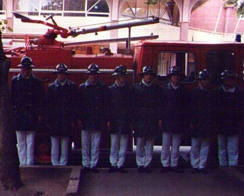
En el año 1985, debido a la visión de algunos voluntarios que se interesaron en esta materia impulsados por las necesidades de nuestra comuna, ciudad que experimentó una gran expansión demográfica e industrial, la cual nos obligó a adquirir un continuo perfeccionamiento y superación personal para enfrentar este nuevo desafío. La creación de la “Brigada de Rescate”; que comenzó a operar con herramientas manuales y eléctricas que permitían realizar las labores de liberación de personas que sufrían accidentes vehiculares de manera eficiente de acuerdo a la década.Luego, en el año 1990 se le encarga a la Quinta Compañía de Bomberos de Talcahuano, la realización de una Convención de Compañías Chileno-Alemanas de Bomberos, en la ciudad puerto. Esta instancia reunió con mucha alegría y por primera vez en Talcahuano a las 18 compañías que son miembros de esta confraternidad, llevándose a a cabo de manera impecable todas las diligencias. En 1991 llega el que es, actualmente el “Carro de Especialidad ” de la compañía, Renault Camiva S170, equipado con material para el combate y extinción de incendio. El 6 de Marzo de 1993, y bajo la comandancia del Quintino Javier Etcheverry Schröer, se desata el brutal incendio del Puerto de San Vicente.
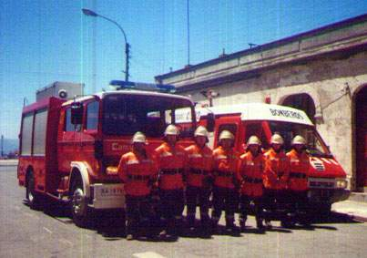
En él, se realiza un combate contra las llamas por cerca de dos días, el que mantuvo en ascuas el futuro de Talcahuano y su gente. Hoy, se reconoce el mérito de los Bomberos de Talcahuano, los que de no haber actuado eficazmente se estarían lamentando inimaginables pérdidas humanas, materiales y medioambientales. En 1994 es adquirido un carro de Rescate, Renault Camiva B 110, actualmente en servicio para Rescates Integrales. Pero los retos de esta compañía, ya en una época reciente y moderna no se estancaron ahí. A inicio de la década del 90′ la Quinta Compañía de Bomberos de Talcahuano tuvo la necesidad de proyectarse hacia al futuro, debido a el rápido y creciente proceso de modernización y expansión de nuestra ciudad puerto, lo que obligaba en parte, a contar con una mayor dotación de personal entrenado.Nuestro compromiso y los sueños del futuro
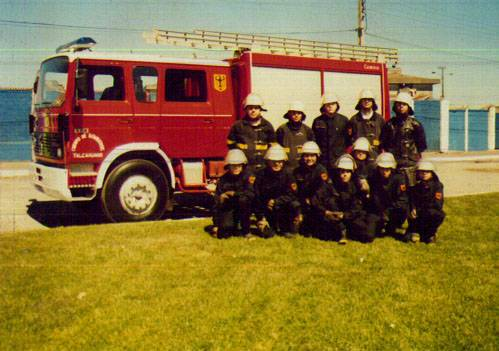
Debido a estas razones la compañía dio vida a la Brigada Juvenil, fundada oficialmente el 26 de Noviembre de 1994, después de una marcha blanca de un año en que se planificaron y trazaron los propósitos y métodos de entrenamiento de los jóvenes bomberos. Hoy por hoy, la brigada juvenil es un punto clave en la formación de nuevas generaciones de la Quinta.A partir del año 1998, la Compañía inicio la construcción de un Cuartel de 1500m2 en 4000m2, funcional a las necesidades operativas y de crecimiento de la institución, ubicado en Villa Independencia, sector Denavi Sur.
En el mes de Octubre de 1999, llega un carro Camiva S 150, que es utilizado como carro mixto (agua y rescate); bautizado el 29 de Enero del 2000 como “Eduardo Saldes Perez de Arce”. En aquel mismo año, y con un grupo de rescate integral ya cohesionado, y concientes del problema de la contaminación de nuestra ciudad, nuestra compañía formó la primera unidad de rescate medioambiental de Chile. Con aportes del Gobierno Regional de la Región del Bío Bío, se implementó a la compañía con una lancha modelo Harbor 28, con dos motores Yamaha de 40 HP. Construida en los astilleros Marco de Iquique, esta lancha está destinada a la limpieza superficial de las aguas por derrame de combustible y desechos (mayor problema en nuestros puertos) única en Sudamérica.
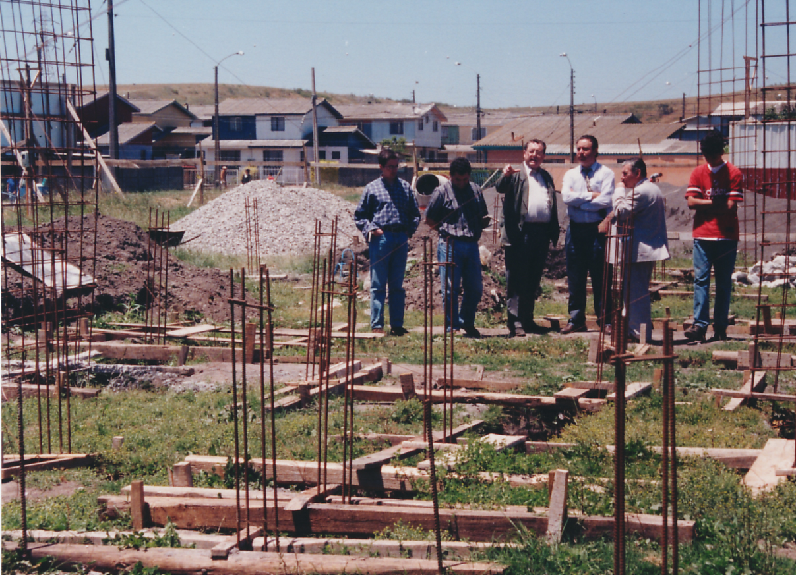
Las instalaciones del nuevo cuartel de la Quinta Compañía, en Villa Independencia entraron en funcionamiento un 12 de enero del año 2001, mientras aún se recibía la llegada del siglo XXI. De esta manera, la Quinta cerraría una historia de más de 90 años de vida en el antiguo Cuartel Central de Colón 797 del puerto; donde en sólo 16m2 se desarrollaba el quehacer bomberil de los Quintinos.Cuando los amigos se van
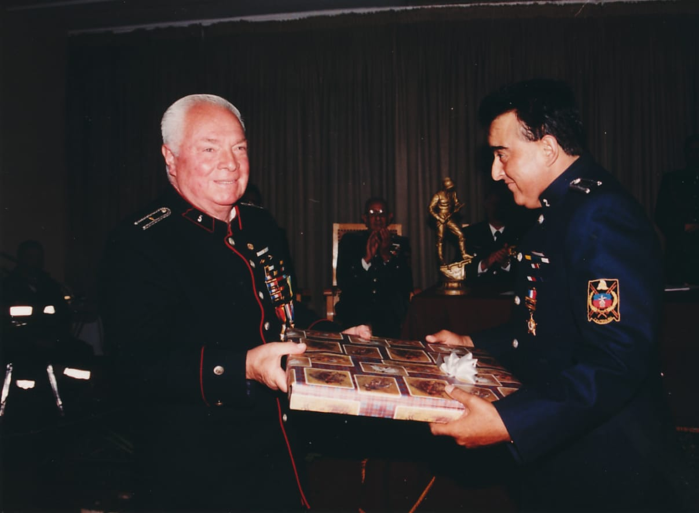
Pero los altos y bajos de la vida no se harían esperar, ya que en todos los largos años de la Quinta, hombres de connotados nombres y méritos tomaron el timón de este gran barco. Así, no sólo la pesada responsabilidad de ser un oficial de la “Bomba Chile”, era motivo de acercamiento entre los integrantes. Amistades de años y vidas fundidas con los metales más duros, provocaron un duro quiebre, sinó un colapso, al momento de despedir de esta vida a los hermanos de bomba, amigos del alma, compañeros inseparables de causa. Don Pedro Vidal Vidal, (Q.E.P.D.) fallecería en el transcurso del año 2002, encabezando la lista de los camaradas que nos dejarían, luego de trasladarnos a nuestra nueva casa.Pero allá en el infinito, Dios quería aún más de lo mejor de nosotros. Así es como nuestro Director, Ariel Duffau Gálvez, aquejado de un cáncer que se le había detectado hacía algunos años, sucumbiría ante el desgaste de aquella enfermedad durante el 2003. El nombre de Ariel Duffau Gálvez (Q.E.P.D.) resonará por siempre en las futuras generaciones. Su legado traspasa lo tangible, así como el dolor de su pérdida; aún hoy al rememorarlo.
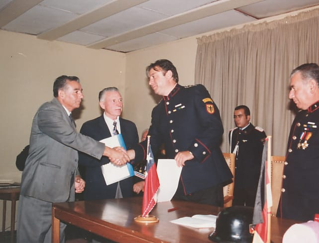
Ariel Duffau, falleció un Jueves 13 de noviembre del 2003 en la Clínica Las Condes, de la capital. Talcahuano enarboló banderas a media asta: en la Universidad San Sebastián, en la que era prorrector; en el Puerto de Talcahuano, cuyo directorio integraba o en el Cuerpo de Bomberos y cuartel de su compañía, la Quinta. Sus restos llegaron aquel mismo día a la zona en una nutrida caravana de vehículos encabezada por un carro de la Quinta Compañía y decenas de personas que esperaron sus excequias y que acompañaban a su familia, la medianoche del jueves, en la Ruta del Itata cuando llegaron desde Santiago. Hubo abrazos y lágrimas y los móviles enfilaron a Talcahuano donde las campanas de Bomberos tañeron sin pausa durante un largo lapso, al iniciarse el velatorio en el Cuartel de la Quinta, donde al mediodía del 14 se rezó un responso después de lo cual los restos de Ariel Duffau fueron trasladados al Campus Las Salinas de la Universidad San Sebastián de Talcahuano desde donde el día sábado 15, después de una misa que fue presidida por un sacerdote que le educó cuando niño, se llevó al Parque San Pedro donde fue sepultado en una triste y emotiva despedida.La Convención de Talcahuano, 2005
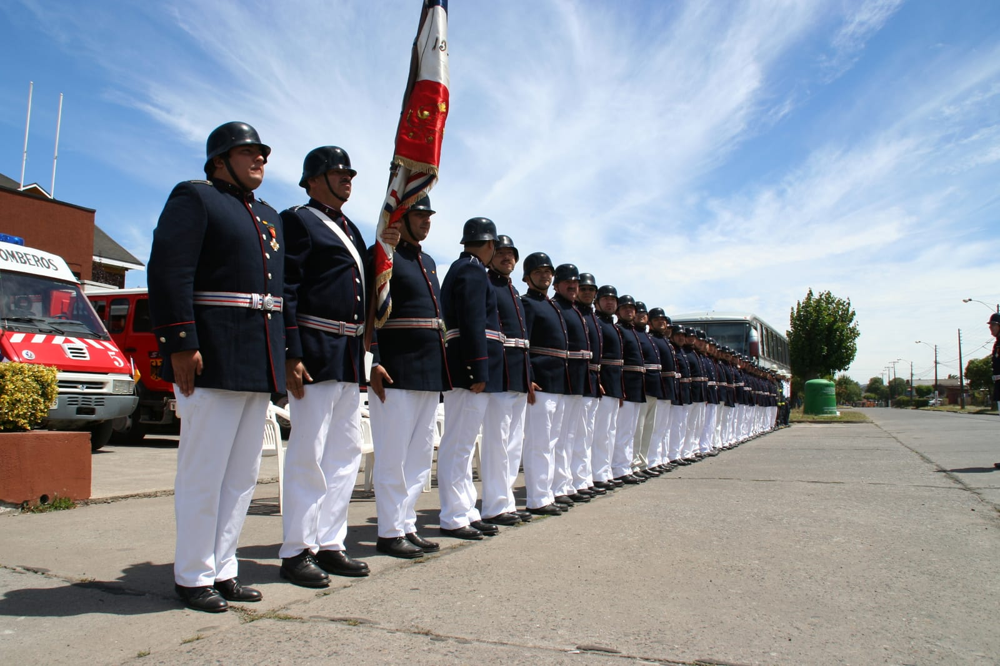
El año 2005 recayó la misión de llevar a cabo (por segunda vez, tras 1990) la XXXVI versión de las Convenciones de Compañías de Bomberos Chileno-Alemanas, en la Quinta Compañía de Bomberos de Talcahuano. Aquella mañana del día 3 de Octubre del 2005 nuestros carros, cuartel, voluntarios y organización de nuestra compañía se encontraban dispuestos para recibir a cerca de 150 bomberos confederados Chileno-Alemanes. Todo debía lucir y ser excelente. Y se logró. Por tres días, la Quinta acaparó la prensa local y los ojos de muchos voluntarios, que en su lejanía deseaban estar al tanto de lo que sucedía en Talcahuano. A los asistentes se les prepararon ceremonias de primer nivel, visitas guiadas a los recintos navales de Talcahuano y comidas en sus instalaciones, charlas de docentes y personajes expertos en las más amplias gamas del saber, quienes instruyeron técnicamente a los confederados, cerrando un 5 de Octubre en un almuerzo de honor en el Recinto “Los Castaños” de Talcahuano. Todos y cada uno de nuestros camaradas confederados, se llevaría un trozo preciado de nuestra historia Quintina, y recuerdos imborrables de lo vivido.Se van dos ilustres
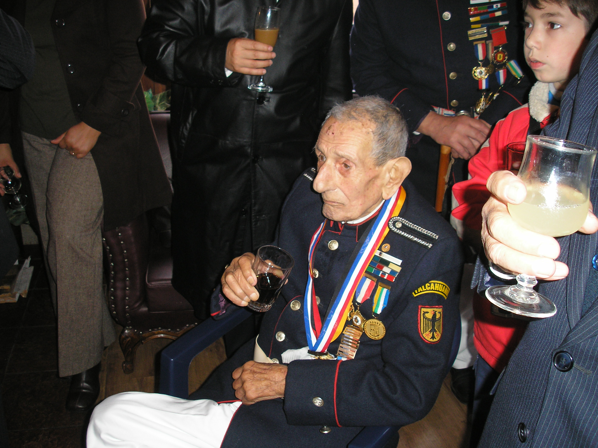
El 2006, llegaría el amargo momento de despedir a Don Eduardo Saldes Pérez de Arce (Q.E.P.D.), quién dió el orgullo por años a este cuartel, de tenerlo con vida y homenajeado como el Voluntario más antiguo del país, con una amplia trayectoria personal y bomberil. Recién en Mayo del 2006 cumplió 100 años de vida y fué celebrado con mucha algarabía por todos sus congéneres. Nadie pensaría que un 2 de Julio del mismo año, su vida terrenal se extinguiría.De la misma inesperada forma, Don Fernando Etcheverry Urra (Q.E.P.D.), empresario, fundador de la Panadería Francesa, vinculado desde muy joven al trabajo, al voluntariado, destacado por su entusiasmo, solidaridad, afición por el servicio público, enorme sencillez y simpatía, nos daría una noticia que abatió nuevamente los corazones de todos y cada uno de los Quintinos. Este hijo distinguido de Talcahuano (1980), miembro del Codeco (- 1981), Vecino Destacado de Talcahuano (- 1985), fué despedido con los honores correspondientes, viviendo en el recuerdo de cada uno de los Voluntarios que escriben el hoy de esta compañía y de quienes conformarán el futuro.
Camino a la «mayoría de edad»
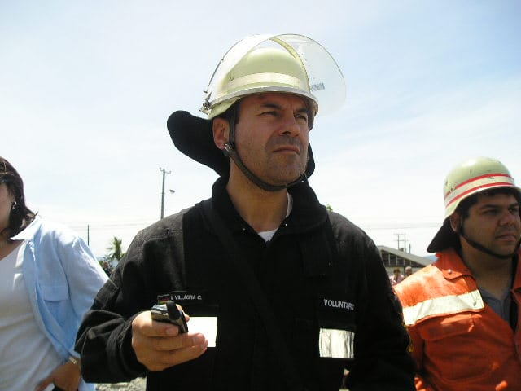
El 2007, sería un año cargado de trabajo y de nuevas aspiraciones para toda la Quinta. No sólo se convirtió en motivo de esmero el trabajo dentro del cuartel sino que también el trabajo fuera de él. Es así como se presentaron siempre dispuestos los voluntarios, en las 350 emergencias que se despacharon para la Quinta Compañía durante el 2007, creando presencia y disponiendo del profesionalismo en la calle para prolongar la vida y resguardar los bienes de los habitantes de la comuna de Talcahuano.El trabajo extrabomberil estuvo marcado por la Fiesta de la Cerveza en sus dos versiones, en donde se impulsó la labor de la compañía para el centenario. Se realizaron también importantes acciones de difusión y mejoras como la recaptación de socios cooperadores y la entrada en vigencia de un moderno sistema de administración de los fondos que provienen de los vecinos y empresas, las realizaciones de los ya tradicionales Bingos del Círculo de Damas de la Quinta y la continuación de nuestra Cena Bailable Pernil Shop el 2007 y 2008.
Las constantes gestiones del Director, Anselmo Villagra Cabello logró buenos frutos en materias de nuestra integración social. Notable es, el hecho de expansión y difusión que tuvo nuestra compañía en el 2007 y 2008 dentro del círculo de la Liga Chileno Alemana, la cual nos integró y realzó los lazos con la comunidad germana residente y la Quinta Compañía, teniendo visitas muy importantes a nuestro ciclo de exposiciones culturales. Antes de terminar el año, una gran importación de materiales desde Alemania se solicitó para venir a introducir más stock de uniformes y herramientas para seguir cumpliendo con la labor principal y mayor misión de la Quinta que es cumplir con un buen servicio.
El Centenario
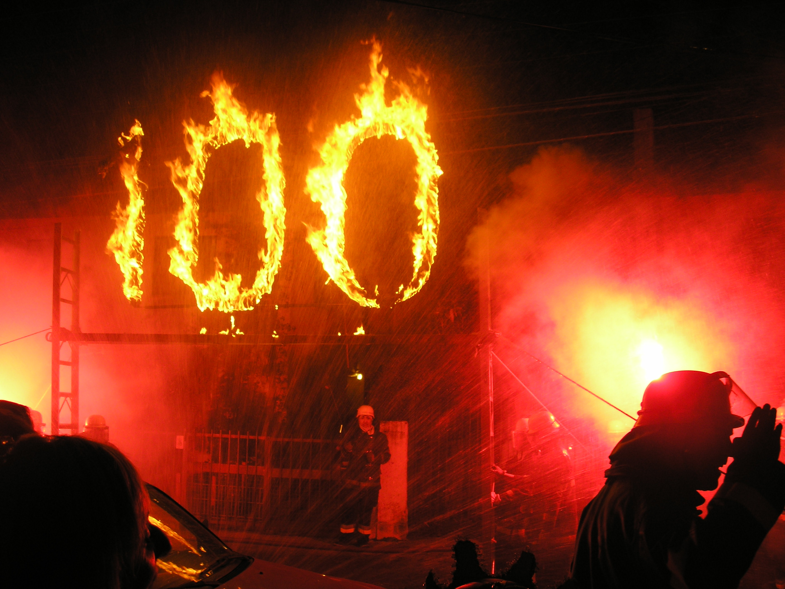
Nuestras actividades de preparación partieron con mucha antelación. Se realizaron ajustes en nuestro cuartel y unidades, actividades sociales y bomberiles como también se prepararon una gran diversidad de jornadas en capacitación y exposiciones. Fué un trabajo arduo.La noche del lunes 28 de enero del 2008 se presentó en medio de una suave bruma costera con la que se dieron cita los voluntarios para celebrar la tradicional vigilia. Faltaban sólo minutos para la medianoche y el último cadete de la compañía terminaba de recibir la medalla del centenario en su uniforme, tal y como lo hicieron los otros 103 voluntarios que antes que él la recibieron en fila. A las Doce en punto, la campana sonó tres veces para indicar que la ahora, centenaria Quinta estaba de aniversario. Luego, el toque de sirena y la canción nacional a voces de todos los voluntarios encendió un 100 de fuego en los ojos de los presentes. Después de eso, sólo abrazos y la alegría de estar viviendo un momento tan místico y lleno de tradiciones; por ser portadores de un trozo enorme de historia y encontrarnos siendo protagonistas de lo más preciado que puede tener una compañía de bomberos que sabe lo que son las tradiciones. Su centenario en pleno.
Con una vibrante ceremonia en el frontis de su cuartel, la Quinta Compañía del Cuerpo de Bomberos de Talcahuano celebró el centenario de su creación. El acto, realizado el martes 29 de enero, contó con la presencia de autoridades locales y nacionales. La condecoración Centenario fue otorgada a Nora Hoffman de Setz, quien a sus 96 años de edad y siguiendo el ejemplo de su esposo fallecido, ha estado ligada toda su vida a la Quinta Compañía. La Quinta pasó desfilando con cerca de 80 voluntarios, frente a un impresionante marco de público en el frontis del Cuartel de la Quinta, en medio de gritos, flashes, cámaras, luces, aplausos y las miradas atentas de las autoridades, el Cuerpo de Bomberos y las Compañías Confederadas hermanas venidas desde distintos puntos del país. Aquellos segundos que duró nuestro desfile quedarán grabados por siempre en la retina de todos aquellos que fueron protagonistas de tan magnífico instante, y que llenó los espíritus de bomberiles.
La Quinta que avanza
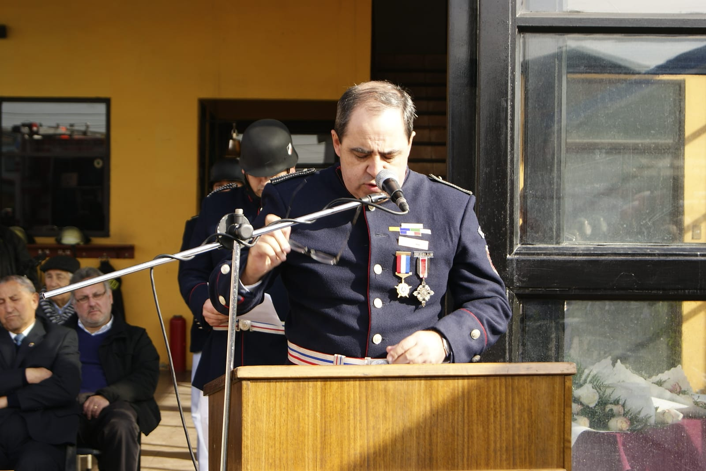
Casi al concluir el 2008 la Quinta lleva a licitación por $45.000.000 el proyecto de término definitivo de su cuartel, para terminar las instalaciones administrativas del primer piso y renovación completa del tercer piso. Además de los proyectos de reparación de la unidad de Rescate Urbano, y la adquisición de unas nuevas herramientas para trabajo en Rescate Vehicular marca Holmatro. En lo humano, al llegar el fin del 2008, la Quinta culminaría una importante época bajo el mando de Anselmo Villagra, quien anunciaría su cese en el cargo que tomó por 5 años, luego de la partida de Ariel Duffau, el 2003. Se cierra un importante ciclo, pero se abren nuevos horizontes de la mano de su sucesor, Jorge Ogalde Gómez en un 2009 en que la Quinta ostenta ya su “mayoría de edad”, consolidándose día a día más al servicio de las personas.Es así como el 2009 trajo consigo algunos cambios, pasando muy rápido para muchos de los Quintinos. Pasando un invierno muy duro con un cuartel en reparaciones, nuestra compañía retornó a la normalidad en el mes de agosto, hecho que de cierta forma alteró el normal funcionamiento de nuestras dependencias, y de nuestro personal. Los frutos se verían luego, con el proyecto completamente terminado y las instalaciones de primer nivel. Una vez más la paciencia rendía sus frutos. En el mes de septiembre tuvimos el privilegio de contar con la visita de Voluntarios pertenecientes a la “Germania” de Valdivia quienes nos dieron un importante curso, que vino a cambiar la forma de enfrentar las emergencias que a diario tiene que lidiar la Quinta.
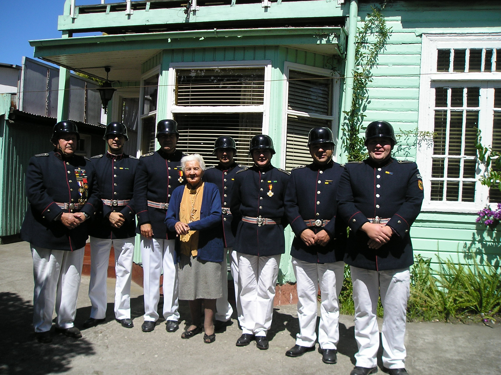
En la mañana del 18 de diciembre del 2009 dejó de existir Nora Hoffmann, viuda del fundador de compañía Don Ricardo Setz. Nuestra querida “Señora Nora” falleció a sus 97 años de edad dejando un ejemplo de fidelidad hacia nuestra compañía y la voluntad de su marido, en la memoria de todos quienes le conocimos. En el fondo, fué la última de nuestros fundadores en partir, y la despedimos como una Quintina más; una más de los nuestros.Ya al ver de cerca el 2010, nuestra compañía erigió a uno de los Capitanes más jóvenes de su historia. Asumía el mando desde el 1 de enero del 2010 el entonces Teniente Segundo, Jorge Ramírez Montecinos; mientras Gustavo Lamig, dejaba su cargo a disposición de la asamblea cerrando un ciclo cargado de la fuerza, decisión y dinamismo que lo caracterizó como oficial hasta ese entonces.
Se vendrían días muy duros para nuestra gente, nuestro país y muy en especial a nuestro amado Talcahuano.
El Terremoto del 2010 y nuestra reconstrucción
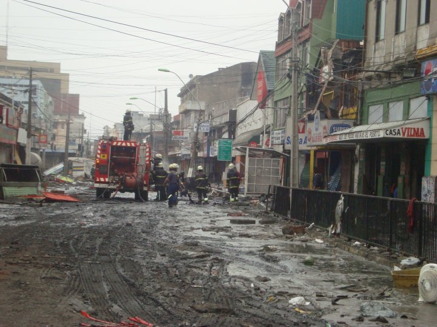
La guardia nocturna del 26 de febrero del 2010 se constituyó sin mayores inconvenientes. A las 01:30 horas ya del día 27, muchos dormían de forma plácida. Sin embargo, a las 03:34 horas nuestro país fué despertado por un horrendo ruido subterráneo y un movimiento sin preámbulo sacó a Chile de la calma.Un terremoto con epicentro en Cobquecura (Región del Bío Bío) de 8.8 grados Richter, sacudió no sólo nuestros hogares y vidas sino que también los años venideros de la Quinta, que a punta de esfuerzo logramos como cohesionado grupo, sacar adelante los sueños y anhelos de los voluntarios.
Nuestra casa tuvo que ser compartida con el Cuerpo Militar del Trabajo durante el año 2010, designados para la reconstrucción de Talcahuano. En medio de este panorama el 6 de Junio del 2010 nos dejaría nuestro Voluntario Honorario Don Juan Sosa Ruíz, quien ingresó a nuestra compañía en 1945, ejerciendo labores de Teniente, Capitán, Miembro de la Junta Disciplinaria de Compañía y Comandante del Cuerpo de Bomberos de Talcahuano; era el patriarca de una muy reconocida familia de bomberos de nuestro puerto. Durante el año 2011 se recibieron aportes fundamentales de parte del Gobierno Central y Regional, de la Junta Nacional de Bomberos de Chile y la industria privada quienes aportaron la suma necesaria para concretar la llegada de la Unidad Iveco Magirus 150E30W HLF 30/25 4×4 que llegaría a renovar nuestro viejo y leal amigo, el Renault Camiva S-170 de 1990. Se suma a esto la implementación de procedimientos estandarizados de trabajo, renovación completa de equipos de protección personal y una total reestructuración de nuestro actuar a nivel interno y externo.
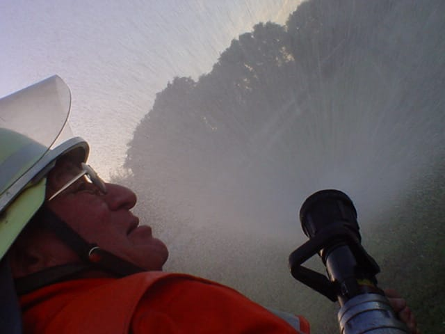
El 2012 nos dejó la triste partida de Don Mariano Grandón Inda. Se nos fue con su simpatía, su buen humor, su disposición de divertir a viejos y jóvenes, sumado a un millón de historias sin fin. Un viejo lindo que hoy nos ilumina desde el cielo, y que cada uno de quienes le conocieron llevan parte de su espontaneidad y alegría.Es de recalcar la participación de la Quinta y su personal en los gigantescos incendios de Parque Nacional Torres del Paine en Diciembre del 2012 y el violento incendio forestal de Quillón, en enero del 2012.
El proyecto «Kaiser» y el camino a la profesionalización
 El año 2012 se recibió en Talcahuano con suma alegría el sueño de muchos Quintinos. La nueva máquina Iveco Magirus 150E30W HLF 30/25 4×4 llegaba hasta el puerto. Fué así que dando lectura por parte de la Central de Emergencias del CBT la orden del dia, fué dado de baja la unidad marca Renault Camiva modelo S-170 año 1990, quedando a resguardo de la comandancia; simultáneamente entrando en servicio la nueva unidad marca Iveco Magirus modelo HLF 30/25 año 2011, cuya primera clave de servicio fué “B-5”, (Actualmente BX-5) como su antecesor veterano de batallas.
El año 2012 se recibió en Talcahuano con suma alegría el sueño de muchos Quintinos. La nueva máquina Iveco Magirus 150E30W HLF 30/25 4×4 llegaba hasta el puerto. Fué así que dando lectura por parte de la Central de Emergencias del CBT la orden del dia, fué dado de baja la unidad marca Renault Camiva modelo S-170 año 1990, quedando a resguardo de la comandancia; simultáneamente entrando en servicio la nueva unidad marca Iveco Magirus modelo HLF 30/25 año 2011, cuya primera clave de servicio fué “B-5”, (Actualmente BX-5) como su antecesor veterano de batallas.
Pero el proyecto Kaiser sólo sería el comienzo para una modernización que iría en alza dentro de nuestro grupo humano. Es así como en el transcurso del año 2012, viajaron un primer grupo de voluntarios a Villa Ballester, Buenos Aires, Argentina luego de un extenuante proceso teórico en Chile por parte de la FIRES Foundation de Houston USA, para concretar la certificación de nuestros voluntarios activos bajo la norma NFPA 1001; norma que rige el trabajo de los Bomberos en Estados Unidos. La certificación se terminó exitosamente en un primer y segundo grupo de voluntarios, capacitando casi a la totalidad de los voluntarios activos actualmente y contando con instrucción un tercer y cuarto grupo de integrantes de nuestra compañía, quienes terminaron de cursar sus evaluaciones finales en el verano del 2015. De estas instancias de capacitación nacería una gran amistad y alianza con la Fundación FIRES; dejando a nuestra compañía como enlace oficial de la fundación en Chile.
Durante esta etapa nos dejaron los Voluntarios: Honorario Sr. Adonai Ayala Ayala y el Tesorero General Honorario Sr. Caupolicán Cisternas Lagos. Con ellos, marcha un legado histórico enorme, que apagan su voz en esta tierra para hacerla resonar desde lo alto.
Avances con visión de futuro
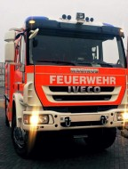
Sin duda la década de los años 2010-2020 han sido de importantísimos avances. Nuestra compañía avanza no solo en la integración de material rodante, material menor, materiales para el combate de incendios, uniforme y el trabajo de rescate de primer nivel, sino que con individuos capacitados para la utilización, procedimientos, técnicas y mantenimiento de nivel profesional en todos los aspectos de nuestra labor diaria. A través del programa de Bombero I y II de la NFPA implementado en esta década se logró contar con Bomberos Profesionales a bordo de las máquinas en la atención de variadas emergencias en la totalidad de nuestros voluntarios activos, quienes tienen este programa aprobado y hoy poseen estándares internacionales en el trabajo contra incendios para enfrentar con plena responsabilidad los nuevos retos que nos hemos trazado. Se realizaron también destacadas participaciones de nuestros miembros en cursos y pasantías en la Argentina, Estados Unidos, Alemania, Colombia y México en calidad de asistentes e instructores. En nuestra casa, se desarrolla un ciclo de instrucción en donde se integran materias al plan de capacitación institucional orientados a integrar conocimientos y destrezas en Rescate Técnico y la formación de nuevos instructores bajo normativas NFPA, de la mano siempre de la Fundación FIRES y la Academia de bomberos de Houston de los Estados Unidos.Todas estas actividades consolidan aún más la labor de nuestra compañía, el compromiso adquirido con las autoridades y nuestra población; tanto así, que en el mes de Junio del año 2015 recibimos en nuestras dependencias al Embajador de la República de Alemania, Sr. Hans-Henning Blomeyer-Bartenstein, reconociendo la labor que cumple la Quinta como una institución que difunde la cultura y tradiciones de Alemania, prestando un servicio de alta calidad técnica y solidez institucional.
Durante el año 2017 suceden dos hitos de relevancia. Un verano particularmente caluroso desataron grandes incendios forestales. Múltiples focos asolaron grandes extensiones de bosques; y con ellos poblados y el trabajo de muchas personas entre Coquimbo y Los Lagos, con una mayor intensidad en las regiones de O’Higgins, Maule y Biobío. Nuestra compañía no estuvo al margen del trabajo en esta desoladora emergencia. Tras las emergencias del verano, ya en el segundo semestre del 2017 se concreta la llegada de una nueva unidad de emergencia destinada al control de incendios. Una anhelada y necesaria bomba TLF 30/40 Iveco Magirus FF150E30 que llegaría un 07 de mayo del 2018 en medio de la tradicional recepción con sirenas. Con este hito, nuestra compañía concreta otro avance necesario en pro de un trabajo óptimo en las emergencias de categoría control de incendios; despejando el horizonte a la recta final del plan de renovación del parque automotriz. Su puesta en servicio ocurrió el día 21 de mayo del 2018, al mediodía. Momento en el cual también se dieron de baja al servicio de nuestra compañía las unidades Renault S-150 y la Renault B-110.
El hoy
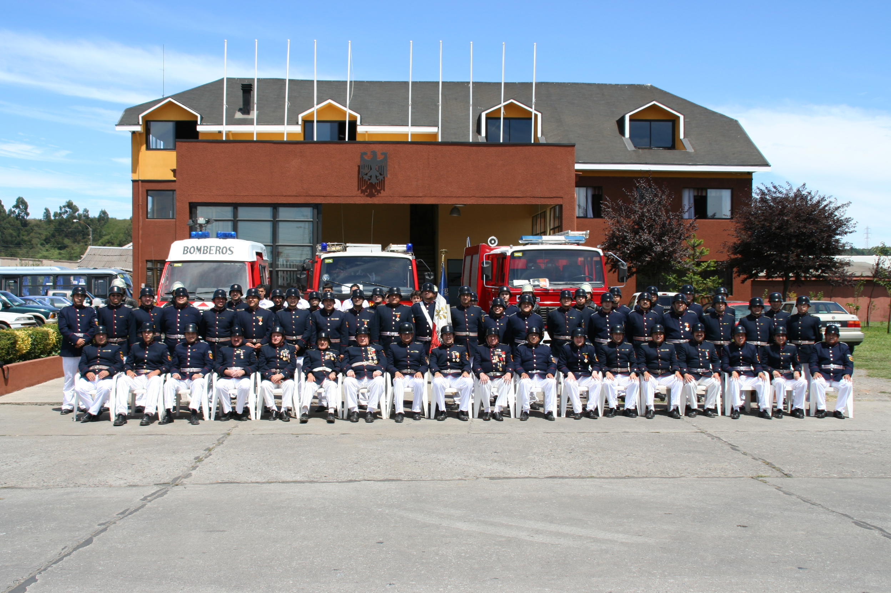
Así la Quinta desarrolla día a día su historia, renovando el fuerte compromiso que tenemos con las personas de Talcahuano. Personas a las que servimos con agrado y esmero, al igual que todo el Cuerpo de Bomberos de Talcahuano.En estos momentos la Quinta Compañía cuenta con modernos materiales para actuar en caso de un siniestro. Entre ellos un carro HLF 25/30 Iveco Magirus modelo FF150E30W con capacidad de 2500 litros de agua, destinado para Incendios Estructurales y Rescate Técnico Pesado; y un carro TLF 30/40 Iveco Magirus FF150E30 destinado a control de incendios con capacidad de 3500 litros de agua, y una lancha Harbor 28, con dos motores Yamaha de 40 HP cada uno, construida en los astilleros Marco en la ciudad de Iquique, destinada a la limpieza superficial de las aguas por derrame de combustible y desechos en recursos hídricos, única en Sudamérica.
Esto, sin contar su más valioso material, que hoy lo forman sus más de 120 integrantes que entregan su vida al anhelo de servir de forma profesional.
No podríamos terminar, sin rendir un homenaje a esos voluntarios que ya no se encuentran con nosotros. Aún así, desde la eternidad siempre atenderán jubilosos el llamado de su querida “Bomba Chile” y a los Voluntarios Honorarios que por determinación del altísimo aún dicen presente cuando el deber los llama, guiando a las generaciones jóvenes por los caminos de la disciplina, camaradería y tradición en esta historia gloriosa que se construyó, se construye, y se continuará construyendo.